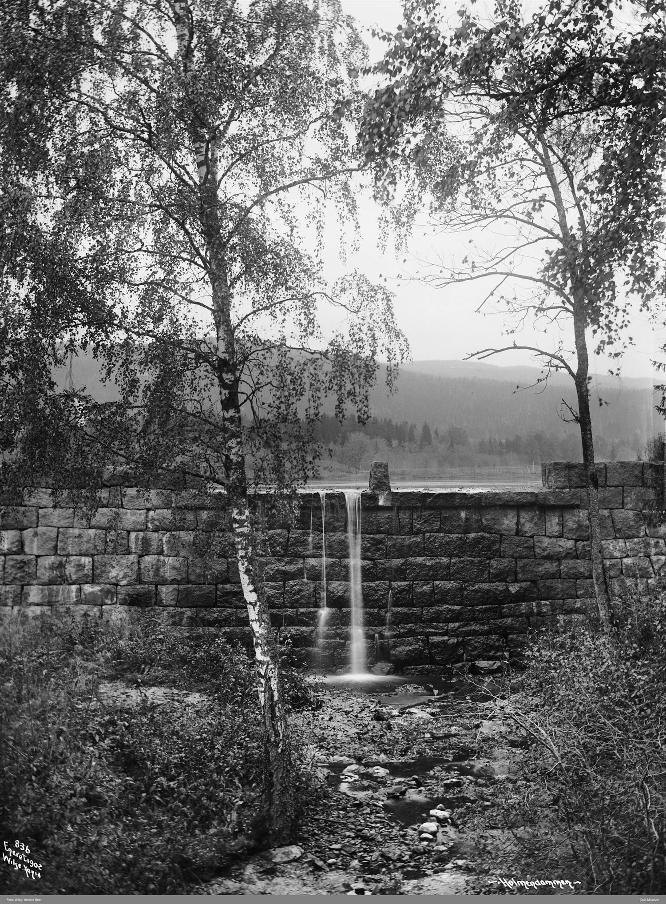
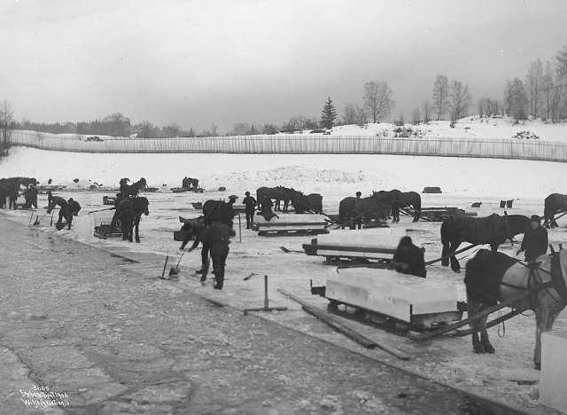
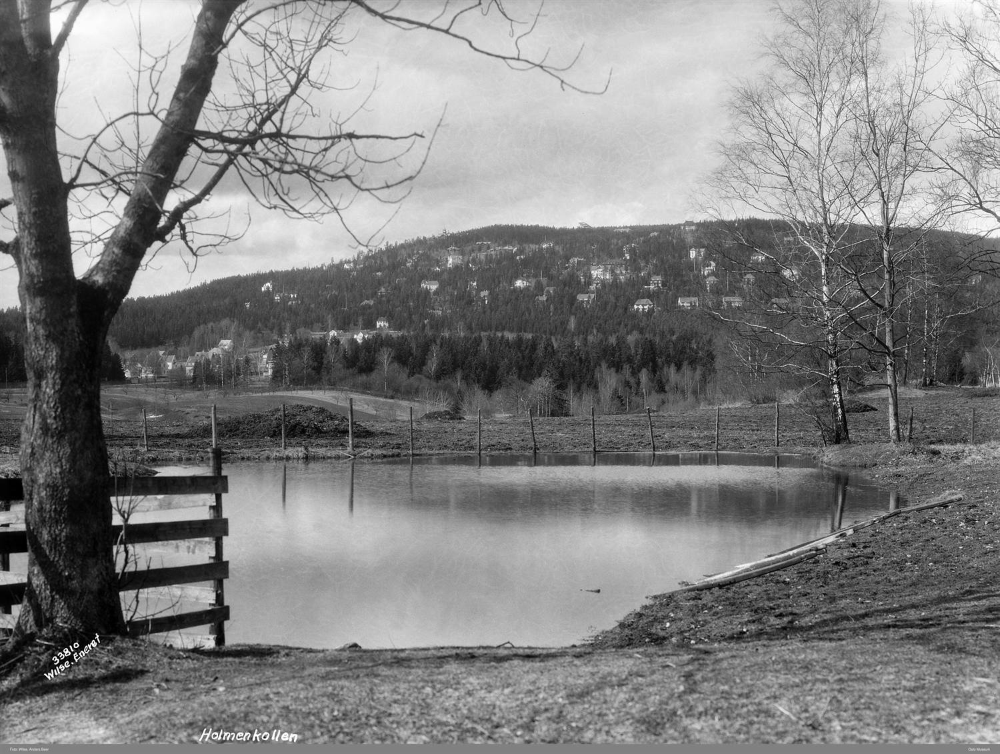
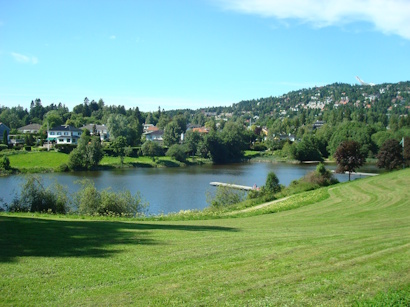

Da Holmendammen leverte kulde til byen
Коли Holmendammen постачав місту холод
I dag er Holmendammen et grønt og fredelig sted mellom Østre og Vestre Holmen. For litt over hundre år siden var vinteren her fylt av hester, sleder, sager og tungt arbeid. Isen fra dammen ble skåret i store blokker og fraktet helt ned til Kristiania.

Holmendammen tilhørte opprinnelig Holmen gård, og etter delingen i 1820 lå den til Vestre Holmen. Hilmar Holmen på Vestre Holmen fikk i 1907 bygget demningen, og dammen ble anlagt som isskjæringsdam.
Tungt og kaldt arbeid
Isskjæringen foregikk i den kaldeste delen av året. Før motorsagen kom, brukte arbeiderne lange og brede håndsager med et tverrtre som håndtak. Det var tungt og kaldt arbeid. En kvinne som kom ned på isen, spurte en gang om det ikke var kaldt å stå der og sage. Faren til fortelleren svarte at det nok var enda kaldere for mannen som sto under isen og dro. Kvinnen trodde ham visst, for hun grøsset og gikk sin vei.

Snørydding med hester
Før isen kunne skjæres, måtte dammen holdes fri for snø. Store skuffer ble trukket av hester over isen, og opptil fjorten hester kunne være med på snøryddingen. I januar kunne isen være over én meter tykk.

Fra dam til bryggeri
Isen ble saget opp i blokker og trukket opp på sledene med ispigger. Seks til åtte blokker var et vanlig lass. Det kunne stå åtte eller ti sleder ved dammen samtidig, og enkelte kjørte to eller tre lass på én dag. Da motorsagen senere ble tatt i bruk, gikk arbeidet raskere.
Mye av isen ble fraktet til bryggerier i Kristiania. Derfra ble den sendt videre til blant annet melkeforretninger og andre kunder. På den tiden fantes det ikke elektriske kjøleskap slik vi kjenner dem i dag, og isen var viktig for å holde varer kalde.
En guttunges hverdag
En gutt begynte å kjøre is fra Holmendammen til Frydenlunds bryggeri da han bare var elleve år. Han kjørte med hest og slede, mens en ekstra hest fulgte etter. Arbeidet var hardt, vinden kunne være fæl, og tjue minusgrader var ikke uvanlig. Som betaling fikk han bare noen brødskiver. Samtidig gikk han i tredje klasse på Majorstua skole.
Gutten arbeidet med iskjøringen i tre år. Senere ble han visergutt for en kjøpmann på Majorstua. Det syntes han var rene ferien sammenlignet med turene mellom Holmendammen og byen.

Holmendammen i dag
Isskjæringen fortsatte fram til rundt 1923. I dag brukes området på helt andre måter. Om vinteren prepareres det rundløype, og det arrangeres skiskole og barneskirenn. Om sommeren trener sportsfiskere på presisjons- og lengdekast fra kastebryggene ved dammen. Slemdal Lions arrangerer også sankthansfeiring ved Holmendammen.

Сьогодні Holmendammen — це зелене й тихе місце між Östre Holmen і Vestre Holmen. Трохи більш ніж сто років тому зима тут була повна коней, саней, пил і важкої праці. Лід зі ставка нарізали великими брилами й везли аж до Крістіанії.
Спершу Holmendammen належав садибі Holmen, а після поділу садиби у 1820 році відійшов до Vestre Holmen. У 1907 році Hilmar Holmen з Vestre Holmen збудував греблю, і ставок було влаштовано як водойму для заготівлі льоду.
Важка й холодна робота
Лід заготовляли в найхолоднішу пору року. До появи бензопил робітники користувалися довгими широкими ручними пилами з поперечною рукояткою. Робота була важка й холодна. Якось одна жінка, що спустилася на лід, запитала, чи не холодно стояти й пиляти. Батько оповідача відповів, що ще холодніше тому, хто стоїть під льодом і тягне пилу знизу. Жінка, мабуть, повірила: здригнулася і пішла.
Прибирання снігу кіньми
Перш ніж розпочати заготівлю льоду, ставок треба було очистити від снігу. Великі ковші тягнули кіньми по льоду, і в прибиранні снігу могло брати участь до чотирнадцяти коней. У січні товщина льоду перевищувала метр.
Від ставка до броварні
Лід розпилювали на брили й затягували на сани крижаними гаками. Звичайний вантаж становив шість-вісім брил. Біля ставка водночас могло стояти вісім чи десять саней, а декотрі візники встигали зробити дві-три ходки за день. Згодом, коли почали використовувати бензопили, робота пішла швидше.
Значну частину льоду везли на броварні у Крістіанію. Звідти він ішов далі, зокрема, до молочних магазинів та інших замовників. У ті часи ще не було електричних холодильників у нашому розумінні, і лід був важливий, щоб тримати продукти холодними.
Будні хлопчака
Один хлопчик почав возити лід з Holmendammen до броварні Frydenlund, коли йому було лише одинадцять років. Він їздив із конем і саньми, а ще один кінь біг позаду. Робота була важка, вітер міг бути лютий, а двадцять градусів нижче нуля — звичайна справа. За свою працю він отримував лише кілька шматків хліба. Водночас він навчався у третьому класі школи Majorstua.
Хлопчик возив лід три роки. Згодом він став посильним у крамаря на Majorstua. Це він вважав справжніми канікулами порівняно з поїздками між Holmendammen і містом.
Holmendammen сьогодні
Заготівлю льоду продовжували приблизно до 1923 року. Сьогодні цей район використовують зовсім по-іншому. Узимку тут готують лижне коло, проводять лижну школу й дитячі лижні змагання. Улітку спортивні рибалки тренують точність і дальність закидання з причалів біля ставка. Slemdal Lions також влаштовують свято Іванова дня (sankthans) біля Holmendammen.
Kilder
Her er du
Slik blir du med på jakten
Finn stolpene rundt om i Vestre Aker, skann QR-koden og les historien om hvert sted. Velg et kallenavn – så samler du poeng for hvert nye sted du besøker. Ingen innlogging, ingen app.
Se kart og kom i gang